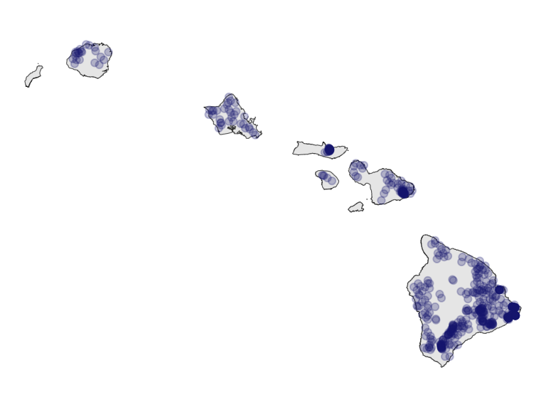

1 Data we will work with
Jump to slides.
1.1 Intorducing the data
We will be working with data from forest monitoring plots across the pae ʻāina Hawaiʻi as well as environmental and geophysical data measured or interpolated at these monitoring plots. The forest monitoring plot data are organized and distributed in a data resource called OpenNahele (Craven et al. 2018).
In this context “open” refers to the data being openly shared and accessible in alignment with the FAIR principles which we discuss in the next section. Nahele in ʻōlelo Hawaiʻi means, in this context, forest. The use of ʻōlelo Hawaiʻi points to the fact that the data pertain to the pae ʻāina Hawaiʻi. This naming choice could show respect and acknowledgement of the Hawaiian provenance of these data, but could also be seen as appropriation. The interpretation of the naming choice depends in part on whether the data not only comply with FAIR, but also the CARE principles, which, again, we discuss in the next section. The CARE principles mandate that Indigenous provenance and governance rights are acknowledged and respected in the stewardship of Indigenous data. The data in OpenNahele originate from the pae ʻāina Hawaiʻi and thus within the traditional lands of the Kanaka ʻŌiwi, making them Indigenous data. Without attribution, or any indication about ʻŌiwi protocols and rights for data collection and use, OpenNahele does not meet the CARE principles. While the good intentions of those distributing the data is not being questioned, we also recognize there is opportunity for making right the stewardship of these, and other, data from Hawaiʻi. We dive much deeper into this discussion in the next section on CARE and FAIR.
The environmental and geophysical data we will use include climate variables, information about human impact, elevation, and geologic age of substrates at the locations of the plot data. For climate variables we use the Hawaiʻi Climate Data Portal (McLean et al. 2023). Elevation, geologic age, and human impact data have been organized by the authors of the OpenNahele data set in a separate data publication (Craven 2019) and we will use those already compiled data rather than re-gather them from the primary sources. However, for the sake of completeness, the primary sources are as follows: elevation (Jarvis et al. 2008), substrate age (Sherrod et al. 2007), and human impact (Society & International Earth Science Information Network 2005).
While these environmental and geophysical data meet the FAIR principles, they again are not CARE compliant. Part of our work in this course will be discussing and envisioning how data collected in Hawaiʻi can live up to the CARE principles.
1.2 Preliminary description of the data
We won’t go deep into visualizing and numerically describing the data here because we’ll save that for our R refresher when we’ll review coding tools by working with these data.
1.2.1 Forest plot data
The forest plot data are found in data/OpenNahele_Tree_Data.csv. The data contain taxonomic identity and diameter at breast height (DBH) for 43,590 individual trees found across 530 plots. Figure 1.1 shows the locations of plots across the pae ʻāina.
Rows in the forest plot data represent individual trees. Therefore, some data across the columns will be duplicated, for example trees from the same plot will have the same plot ID. Columns in the forest plot data are described in data/README_for_OpenNahele_Tree_Data.txt, reproduced below:
| Column label | Column description |
|---|---|
| Island | Island name |
| PlotID | Unique numeric identifier for each plot |
| Study | Brief name of study |
| Plot_area | Plot area in m2 |
| Longitude | Longitude of plot in decimal degrees; WGS84 coordinate system |
| Latitude | Latitude of plot in decimal degrees; WGS84 coordinate system |
| Year | Year in which plot data was collected |
| Census | Numeric identifier for each census |
| Tree_ID | Unique numeric identifier for each individual |
| Scientific_name | Genus and species of each individual following TPL v. 1.1 |
| Family | Family of each individual following TPL v. 1.1 |
| Angiosperm | Binary variable (1 = yes, 0 = no) indicating whether an individual is classified as an angiosperm following APG III |
| Monocot | Binary variable (1 = yes, 0 = no) indicating whether an individual is classified as a monocot following APG III |
| Native_Status | Categorical variable (‘native’, ‘alien’, ‘uncertain’) indicating alien status of each individual following Wagner et al. (2005) |
| Cultivated_Status | Binary variable (1 = yes, 0 = no, NA = not applicable) indicating if species is cultivated following PIER |
| Abundance | Number of individuals (all = 1) |
| Abundance_ha | Abundance of each individual on a per hectare basis |
| DBH_cm | Diameter at 1.3 m (DBH) for each individual; NA indicates that size was not measured, but was classified by size class |
1.2.2 Climate data
Climate data are found in data/plot_climate.csv. Rows here are unique plots and no information in any column is duplicated. Columns are described in data/README_for_plot_climate.txt, reproduced below:
| Column label | Column description |
|---|---|
| PlotID | Unique numeric identifier for each plot |
| lon | Longitude of plot in decimal degrees; WGS84 coordinate system |
| lat | Latitude of plot in decimal degrees; WGS84 coordinate system |
| evapotrans_annual_mm | Actual annual evapotranspiration in mm |
| avbl_energy_annual_wm2 | Annual available energy in W/m^2 |
| cloud_freq_annual | Annual cloud frequency in days/year |
| ndvi_annual | Normalized Difference Vegetation Index |
| rain_annual_mm | Annual rain fall in mm |
| avg_temp_annual_c | Annual average temperature in celsius |
1.2.3 Human impact and geophysical data
Human impact data and geophysical data are found in the same file, only because they are from the same source. That file is data/hii_geo.csv. Its rows are also unique plots and no information in columns is duplicated across rows. Columns are described in data/README_for_hii_geo.txt, reproduced below:
| Column label | Column description |
|---|---|
| PlotID | Unique numeric identifier for each plot |
| lon | Longitude of plot in decimal degrees; WGS84 coordinate system |
| lat | Latitude of plot in decimal degrees; WGS84 coordinate system |
| hii | Human impact index |
| age_yr | Geologic substrate age in years before present |
| elev_m | Elevation in meters |
1.2.4 Biocultural dimensions
Lāʻau are found in the Kumulipo, an ʻŌiwi creation chant, and many significant genealogical moʻolelo such as that of Hāloanakalaukapalili (the first kalo) and Hāloa (his younger brother, the first Hawaiian), bringing the plants we’ll work with into the moʻokūʻauhau of Kānaka ʻŌiwi. The author (me Andy your instructor) is not trained to understand these relationships but follows the lead of ʻŌiwi scholars and their work such as Hutchins et al. (2023) and Goldberg-Hiller & Silva (2015). Genealogical relations require deep regard and respect.
Western science might use the term “biocultural” for the connections between human and non-human aspects of the world. In addition to “biocultural”1 moʻokūʻauhau, there are at least two other “biocultural” dimensions to consider.
- Lāʻau lapaʻau and ethnobotanical connections to plants
- Wahi pana and different categories of wao (e.g. wao akua) along with other ʻōiwi geographies that carry specific cultural protocols and sensitivities
In regard to lāʻau lapaʻau and ethnobotany, the Bernice Pauahi Bishop Museum provides a Hawaiian ethnobotany database built largely on the work of esteemed ʻŌiwi scholar Isabella Aiona Abbott (1992). This database is neither CARE nor FAIR compliant (not even providing full bibliographic information to fully credit Abbott (1992)) so we will not linger on it except to compare the plant names listed as ethnobotanically significant with plant names in the data we will work with. Doing so reveals that in the data set we will work with, 88% of individual trees and 56% of unique taxa have ethnobotanical significance.
A similar analysis of the geographic overlap of wahi pana and wao with the coordinates of plot data is not as simply completed. Different wao have specific geographic boundaries and carry different cultural protocols, knowledge held by cultural practitioners and not always interoperated with western cartography [which would allow analysis with plot data; but see Winter & Lucas (2017)]. However, there is a working assumption among some cultural and natural resource practitioners in Hawaiʻi that the wao akua corresponds roughly to high elevation, native forest areas. This is not universally agreed upon but in the current context could have utility as a heuristic. What constitutes native forest is open for debate, and any choice comes with inaccuracies. However, we could ask what percent of plots are composed of at least three quarters native trees. The answer is 70%. So perhaps 70% of plots are located in wao akua across the pae ʻāina. The wao akua is a realm with strict cultural protocols relating to its kapu status (Winter et al. 2018), protocols that were likely rarely if ever met when collecting these data.
Many—perhaps most—wahi pana are recorded in written Hawaiian language sources (e.g. nūpepa) that are cataloged in the Papakilo Database. However, Andy is not proficient enough in the Papakilo Database nor ʻōlelo Hawaiʻi nor place names across the entire pae ʻāina to analyze plot coordinates in relation to wahi pana, at least for now. But we should assume that many plots are located in or near wahi pana.
1.3 Ecological questions we’ll consider
The flora of Hawaiʻi has been a source of inspiration, sustenance, medicine, and scientific inquiry for millennia (Abbott 1992). Kānaka ʻŌiwi produced, shared, and continue to produce the ancestral knowledge needed to understand the flora of Hawaiʻi and its connect to humans. ʻŌiwi scientists do so using ʻŌiwi methodologies (for one compilation see Thapar 2013) grounded in epistemologies that at times share parallels with western epistemologies Keawe (2008) and at other times do not (Handy & Pukui 2058). ʻŌiwi methodologies are self-evidently rigorous and deserve equal respect with western methodologies. Using ancestral knowledge and Indigenous methodologies, Kānaka ʻŌiwi sustained large populations over long periods of time with effectively zero external resource input, in contrast to the current situation in Hawaiʻi of an unsustainable population, not much larger than pre-contact ʻŌiwi populations, dependent on external inputs for 90% of our needs (Gon III et al. 2018). ʻŌiwi methodologies should be learned but this class could not possibly do that justice. Therefore this class stays within western epistemologies, not out of a sense of superiority, but of positionality.
From a western perspective, forests in Hawaiʻi are shaped by a multitude of processes (Barton et al. 2021). This is not a forest ecology class, but it is a class about using statistical models to help us answer questions in ecology and evolution. So we will engage with questions and hypotheses in ecology and evolution. We will foreshadow some of our future analyses by highlighting a few interesting drivers of and processes underlying plant biodiversity in Hawaiʻi.
Two striking features about the flora of Hawaiʻi are 1) it is abundant with diverse and unique forms of plant life; and 2) it is highly modified by human activities, notably pervasive and numerous invasive or non-native species brought by settler colonialism. Many students may not be plant people, e kala mai, so it is worth saying that neither, really, is Andy, and the two striking features about the flora of Hawaiʻi are true for the larger biota of Hawaiʻi. While the unique physiological and demographic mechanisms underlying the flora are surely different from the fauna, the courser ecological and evolutionary processes likely share some generalities.
Of those possible generalities, we will look into a couple—with statistical models—throughout this class:
- How have ecology and evolution played out across the multi-million year chronosequence of the pae ʻāina to shape differences in biodiversity across and within islands (investigated, for example, by Gillespie 2016; Rominger et al. 2016)?
- How have human impacts and climatic variables modulated biodiversity (investigated, for example, by Lim et al. 2021; Hutchins et al. 2023)
- Can data on human impacts and climate help us understand how invasive/non-native species occupy ecosystems (investigated, for example, by Blackburn et al. 2011; Fortini et al. 2013)
1.4 Slides
1.5 References
Abbott IA. 1992. Lāʻau Hawaiʻi: Traditional hawaiian uses of plants. Bishop Museum Press.
Barton KE et al. 2021. Hawai‘i forest review: Synthesizing the ecology, evolution, and conservation of a model system. Perspectives in Plant Ecology, Evolution and Systematics 52:125631. Elsevier.
Blackburn TM, Pyšek P, Bacher S, Carlton JT, Duncan RP, Jarošı́k V, Wilson JR, Richardson DM. 2011. A proposed unified framework for biological invasions. Trends in ecology & evolution 26:333–339. Elsevier.
Craven D. 2019, June. Dylancraven/hawaii_diversity: beta. Zenodo. Available from https://doi.org/10.5281/zenodo.3250638.
Craven D, Knight TM, Barton KE, Bialic-Murphy L, Cordell S, Giardina CP, Gillespie TW, Ostertag R, Sack L, Chase JM. 2018. OpenNahele: The open hawaiian forest plot database. Biodiversity Data Journal:e28406.
Fortini LB et al. 2013. A landscape-based assessment of climate change vulnerability for all native hawaiian plants. University of Hawaii.
Gillespie RG. 2016. Island time and the interplay between ecology and evolution in species diversification. Evolutionary applications 9:53–73. Wiley Online Library.
Goldberg-Hiller J, Silva NK. 2015. The botany of emergence: Kanaka ontology and biocolonialism in hawai’i. Native American and Indigenous Studies 2:1–26. JSTOR.
Gon III SM, Tom SL, Woodside U. 2018. ʻĀina momona, honua au loli—productive lands, changing world: Using the hawaiian footprint to inform biocultural restoration and future sustainability in hawai ‘i. Sustainability 10:3420. MDPI.
Handy EC, Pukui MK. 2058. The polynesian family system in ka-ʻU, Hawaiʻi. Polynesian Society.
Hutchins L, Mc Cartney A, Graham N, Gillespie R, Guzman A. 2023. Arthropods are kin: Operationalizing indigenous data sovereignty to respectfully utilize genomic data from indigenous lands. Molecular Ecology Resources 25:e13822. Wiley Online Library.
Jarvis A, Guevara E, Reuter H, Nelson A. 2008. Hole-filled SRTM for the globe: Version 4: Data grid.
Johnson RK. 1981. Kumulipo, the hawaiian hymn of creation. Topgallant Publishing Company.
Keawe LO. 2008. Ki’i papalua: Imagery and colonialism in hawai’i. PhD thesis. University of Hawaii at Manoa.
Lim JY, Patiño J, Noriyuki S, Cayetano L, Gillespie RG, Krehenwinkel H. 2021. Semi-quantitative metabarcoding reveals how climate shapes arthropod community assembly along elevation gradients on hawaii island. Molecular Ecology 31:1416–1429. Wiley Online Library.
McLean J, Cleveland SB, Dodge M, Lucas MP, Longman RJ, Giambelluca TW, Jacobs GA. 2023. Building a portal for climate data—mapping automation, visualization, and dissemination. Concurrency and Computation: Practice and Experience 35:e6727. Wiley Online Library.
Rominger A et al. 2016. Community assembly on isolated islands: Macroecology meets evolution. Global ecology and biogeography 25:769–780. Wiley Online Library.
Sherrod DR, Sinton JM, Watkins SE, Brunt KM. 2007. Geologic map of the state of hawaii, sheet 3: Island of oahu. United States Geological Survey Open-File Report 1089.
Society WCWC, International Earth Science Information Network C for. 2005. Last of the wild project, version 2 (LWP-2): Global human footprint dataset (geographic).
Thapar R. 2013. The past before us. Harvard University Press.
Winter KB, Beamer K, Vaughan MB, Friedlander AM, Kido MH, Whitehead AN, Akutagawa MK, Kurashima N, Lucas MP, Nyberg B. 2018. The moku system: Managing biocultural resources for abundance within social-ecological regions in Hawaiʻi. Sustainability 10:3554. MDPI.
Winter KB, Lucas M. 2017. Spatial modeling of social-ecological management zones of the ali’i era on the island of kaua’i with implications for large-scale biocultural conservation and forest restoration efforts in hawai’i. Pacific Science 71:457–477. University of Hawai’i Press.
“Biocultural” is in quotes here to indicate the deficiency of the term in this context and especially when grammatically attached to moʻokūʻauhau↩︎